Git 是一套很棒的分散式版本控制系統。不過由於它一直是在 Linux 上生長的，對於在 Windows 上使用來說其實稍嫌麻煩。
Windows 上的各種 Git
在網路上搜尋通常會找到 Git for Windows 跟 msysGit 這兩個不同的名詞，我過去一直沒辦法很清楚的把他們兩者區分開來。根據 msysgit 在 github 上的首頁 與 StackOverflow 上的討論，我目前的理解是：
- msysGit 是 msys + Git 的完整環境，包含了 build 程式用的 toolchain，同時他的執行檔是直接在 user (或者該說是 developer) 的機器上 compile 出來的，使用者隨時可以透過
git pull取得最新版的 msysGit 來編譯，算是給 git 開發者用的。 - Git for Windows 可說是 msysGit 的「產出」，是預先 compile 好的
git.exe還有其他執行檔們…其中只包含了基本的 msys 環境、有 bash、ssh、甚至 Git GUI 等工具，但是沒有 toolchain，適合單純使用（操作）git 的使用者安裝。
另外還可能會找到一個更有名的東西，稱為 TortoiseGit，這是知名專案 TortoiseSVN 的相關專案，顧名思義，就是烏龜殼包了 Git 啦！要注意的是，他只是一個 Git frontend，需要指定相關執行檔 (如 git.exe) 的位置才能工作。特別的是，他本身附帶了 PuTTY 的 ssh client (plink.exe)，讓使用者可以透過比較符合 windows 使用習慣的方式來使用 ssh，如果不是很熟 linux 或是 GUI 狂熱份子可能會比較喜歡。XD
註：知名專案 cygwin 也可以安裝 git 並在 command line 下使用，但對於沒在使用 cygwin 的使用者而言麻煩得多，故此處不介紹。
這篇文章分成三個部分：首先介紹 Git for Windows (免 compile 的那個) 的安裝，接著是 msysGit (需要 compile 的那個) 的安裝，最後會介紹 TortoiseGit 的安裝，並以一個簡單的 git clone 作為結束。如果是一般單純想在 windows 上用 git 的人，可以只看第一跟第三部分即可，第二部分就當作參考資料吧！
另外報告一下我用的環境：
- Windows 7 32bit
- msysGit 1.7.10
- TortoiseGit 1.7.9 32bit
Git for Windows (WinGit)
-
到 msysGit 的官方網站下載
Git-(版本)-(日期).exe -
開始安裝
安裝精靈
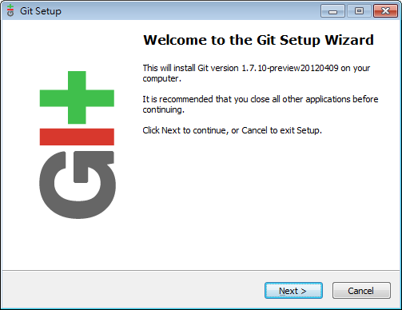 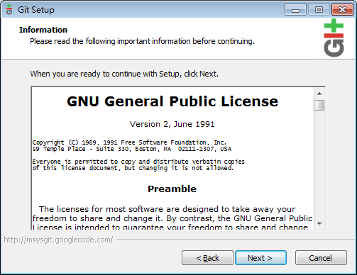預設的安裝位置，TortoiseGit 預設也是搜尋這個位置，建議不要改
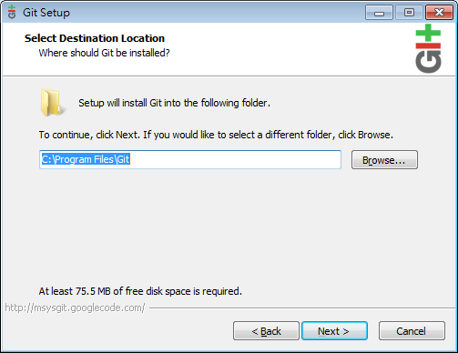因為環境是 Windows 7，我就不加入快速啟動了。另外，這一頁最下面的選項 (被遮住了) 如果勾選的話，可以把 Windows 本來的 command line (
cmd.exe) 的字型也變好看，是否要用就見仁見智囉
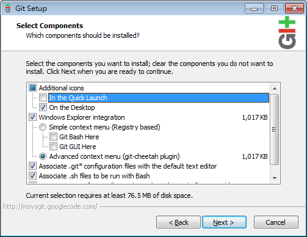 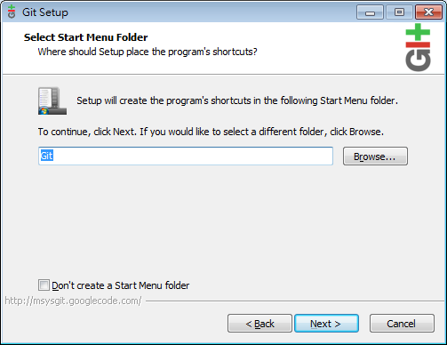建議保留 Git Bash，至於要不要把 unix tools 加入 windows command line 的 path 就看人了，如果不了解的話，保留預設值 (第一個) 即可
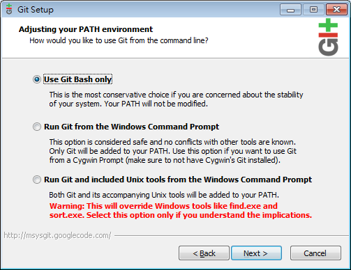關於換行格式的問題。除非有特殊考量，一般使用第一個選項會比較通用
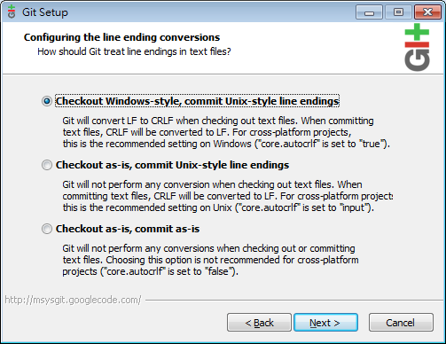 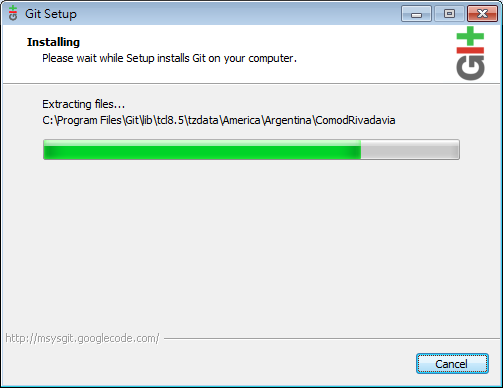 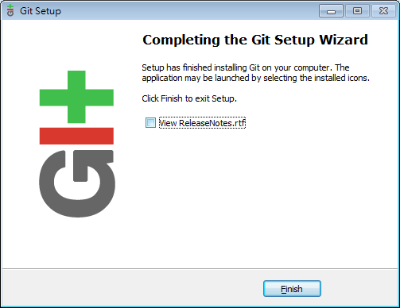安裝完成後，桌面上會出現 Git Bash 的 icon
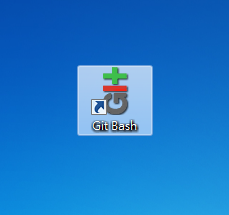 -
桌面上按右鍵就看得到快顯功能表已經新增 Git 相關選項了，安裝完成！
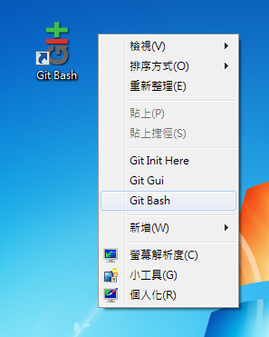
這是 Git Bash 的執行畫面，會操作 Linux 的人應該會很容易上手
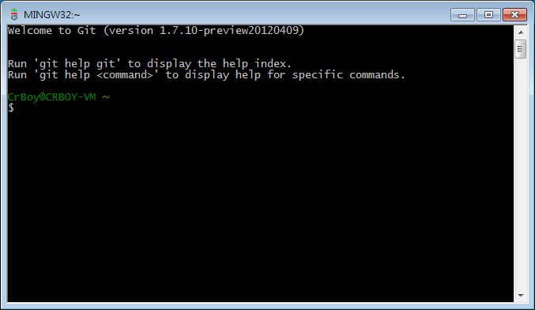這個則是 Git GUI 的執行畫面，如果所在目錄不是 git repository 的話，只會有這三個選項
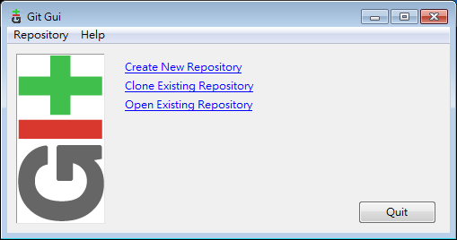可以 clone repository (就是
git-clone)
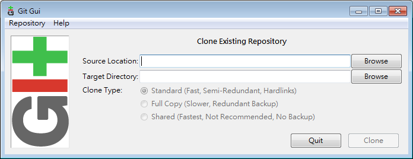如果在 git repo 中執行 Git GUI 的話，會看到一個具有完整 git 功能的畫面
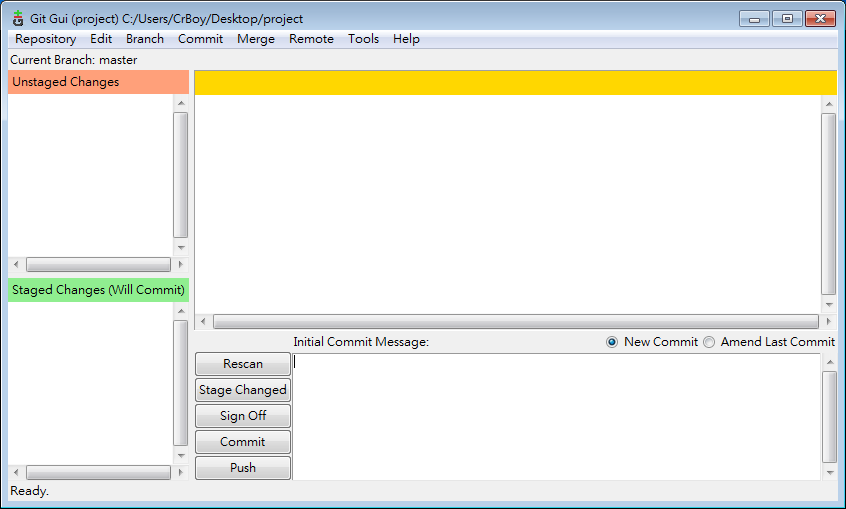如果是 Linux user，或是只想要以最簡單的方式使用 git 的話，其實只要安裝這個就夠了。透過 Git Bash 就可以像一般 Linux 上操作，透過 Git GUI 也可以進行同樣功能的操作。
需要注意的是，如果單純使用 WinGit 的話，要使用 ssh 必須手動透過指令去設定。就像在 Linux 上一樣，ssh key 放在
~/.ssh底下，可以透過 git bash 去執行ssh-keygen來產生 key。
msysGit (參考用，大部分人可跳過此段)
-
到 msysGit 的官方網站下載
msysGit-fullinstall-(版本)-(日期).exe(或是netinstall版，但是因為某些意外，他們的安裝行為有微妙的差異) -
安裝 msysGit
選擇安裝位置
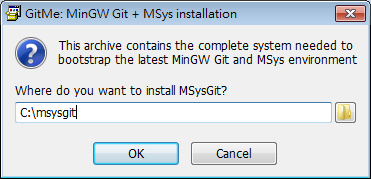這邊有件奇妙的事情，fullinstall 版的預設會在這目錄下建立一個
msysgit的目錄，造成真正的安裝路徑為C:\msysgit\msysgit，而 netinstall 版就沒有這個問題。這裡我們保留預設值，雖然奇怪但不影響後面的操作。安裝中
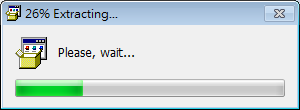檔案複製完成後，自動開始編譯
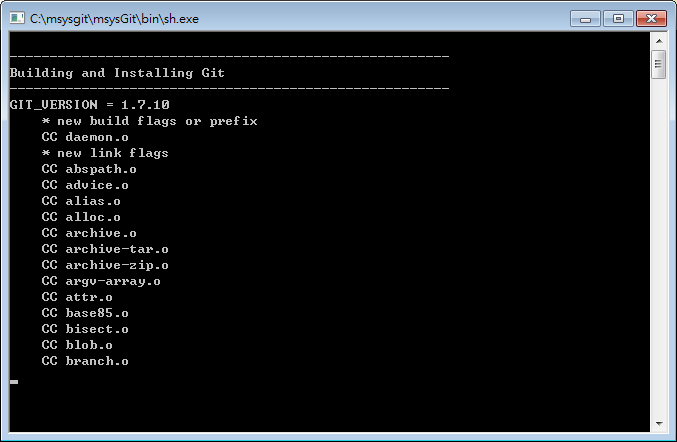編譯完成
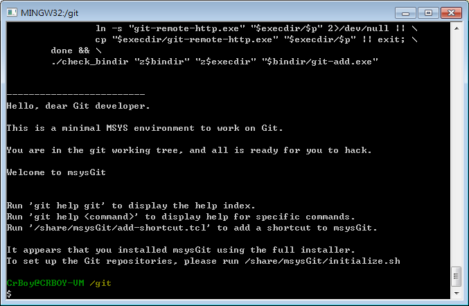
TortoiseGit
-
到 TortoiseGit 的官方網站下載
TortoiseGit-(版本)-(32bit|64bit).msi -
安裝 TortoiseGit
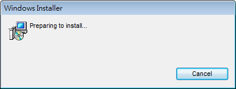
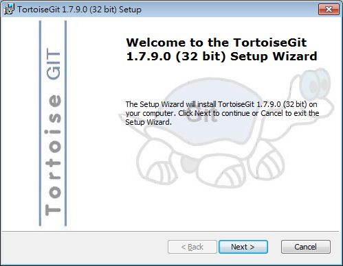
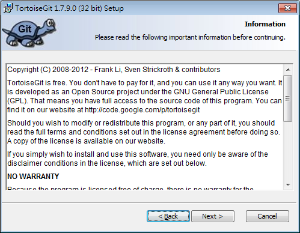TortoiseGit 似乎比較想要我們用 TortoisePLink，那就用用看吧！ 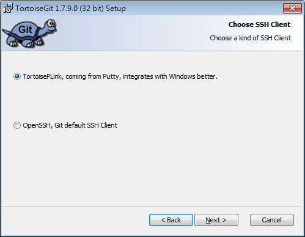
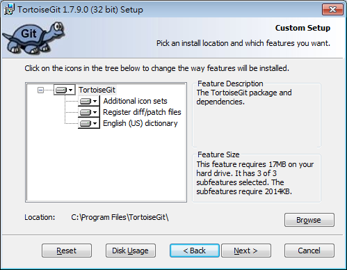
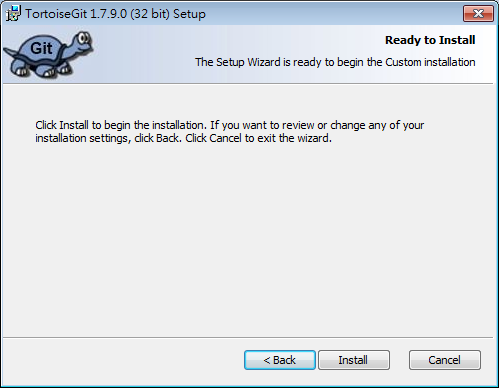
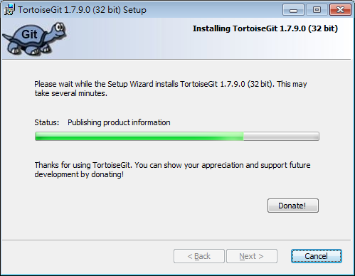
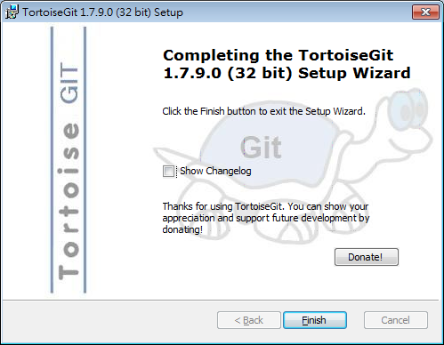如果你是安裝 msysGit (自行編譯那個) 的話，啟動 TortoiseGit 的時候會跳出錯誤訊息，他找不到
git.exe，也就是 Git 的執行檔。如果是安裝 WinGit 的話就沒有這個問題
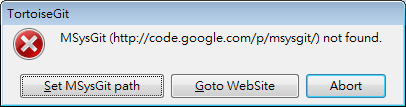如同前面所說的，msysGit 被裝在
C:\msysgit\msysgit裡了，而我們想要找的執行檔位於bin底下
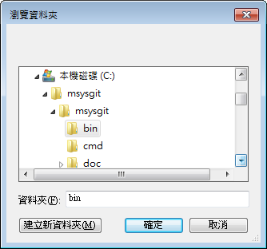選好後，「Git.exe Path:」的後面應該會出現這樣的路徑，如果 git 被安裝在別的地方，可自行變通
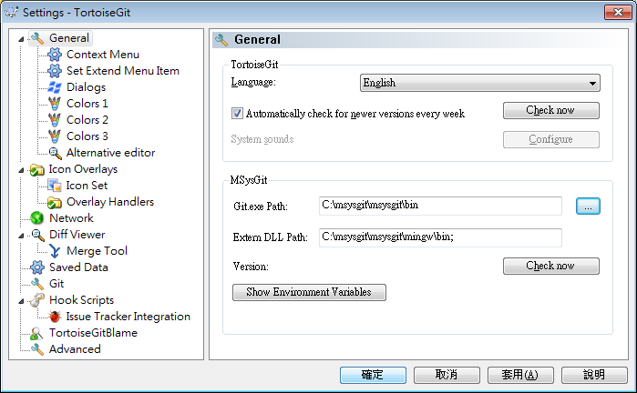此外，不管使用那個版本的 Git backend，都必須設定自己的名字與 email，這兩項資訊在 Git 中是相當必要的
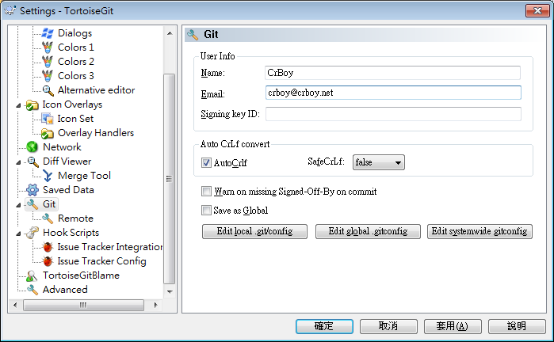 -
產生 ssh key
由於我們打算運用 putty 來連線，所以要產生專門給 putty 用的 ssh key，這跟一般 Linux 上在用的 OpenSSH 的 private key 格式是不同的。
打開 Puttygen
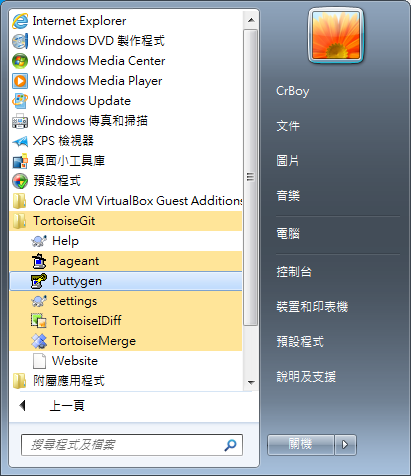按下 Generate 即可自動產生一把 key，有趣的是他會要求你移動滑鼠來產生亂數，用以生成這把 key。(在 Linux 上用 ssh-keygen 就不用這樣，是為了好玩還是 windows 沒有亂數產生器啊？)
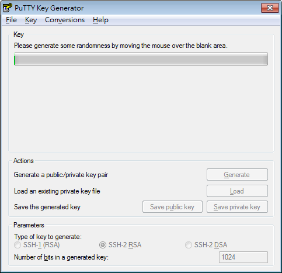邊動滑鼠就可以看到進度邊跑
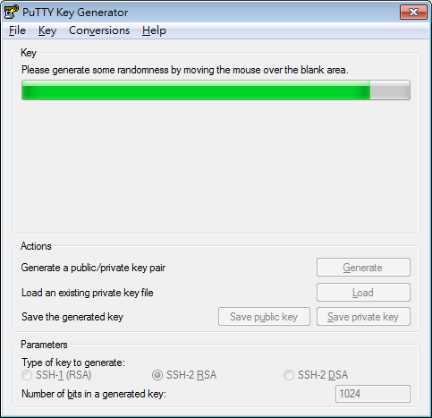產生出來的 key，Puttygen 會幫你把 public key 顯示出來，可以自定 comment，並利用 Save public key 將其輸出。這把 public key 就是用來提供給 git server 管理者用的身分憑證。
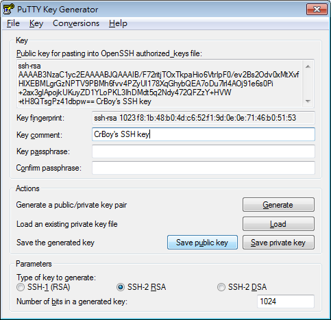如果事前已經有在其他地方產生過 OpenSSH 格式的 private key，可以透過上方選單中的 Conversions -> Import 來匯入，或是用 Load 的功能也可以匯入其他格式的 ssh key。匯入後跟剛產生一把新的狀況是一樣的，可以繼續下面的步驟。
接下來就可以利用 Save private key 來匯出跟那把 public key 對應的 private key 了 (好拗口)。要特別注意的是，這把 private key (相當於密碼) 不可以弄丟，也不可以洩漏。萬一弄丟，那對應的 public key 也就沒辦法使用了，如果洩漏的話則有身分被盜用的危險！要注意！(就相當於密碼不能忘記也不可以洩漏一樣)
為了更好的安全性，建議輸入 passphrase 保護這把 private key。如果設定了 passphrase，則每次使用到這把 key 的時候都得輸入 passphrase。有些人會覺得奇怪，這樣跟直接用密碼登入有什麼不一樣呢？最大的不同就是，密碼登入是利用密碼作為憑證，有密碼的人就可以登入。透過 key 登入是利用 key 作為憑證，別人拿不到 key 就沒辦法盜用身分 (除非對方有很強大的運算能力，這不在一般討論範圍內)，而 passphrase 是用來保護 key 沒辦法被盜用的措施，此舉可達成雙因素認證，比密碼認證更安全！(有個說法是，沒有用 passphrase 的 key 就跟把密碼存成文字檔放在電腦裡一樣)
如果沒有輸入 passphrase，會跳出警告。
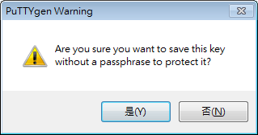可以利用 Pageant 幫我們管理 ssh key (因為一個人可能同時有很多把 key)
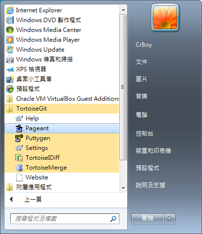按下 Add Key
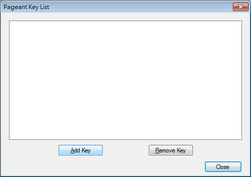 {% asset_img tortoisegit/19.png %}選擇之前做好的 ppk 格式的 key
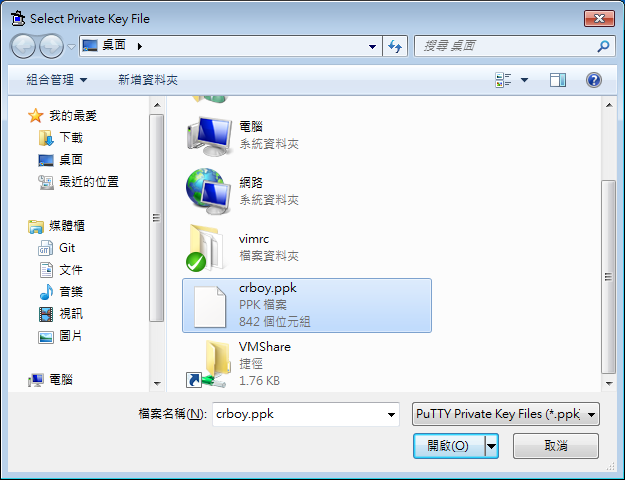這樣就匯入一把 ppk 格式的 ssh key 了
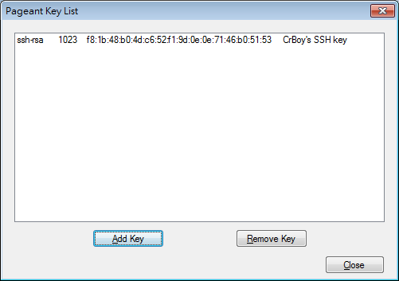 -
初步使用以確定設定正常
Git clone 看看
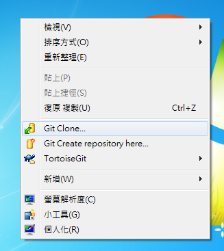輸入 URL，雖然我搞不太清楚他的格式，不過似乎 ssh 不用寫
ssh://，git://之類的才需要特別寫
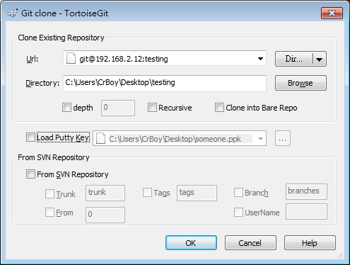這個例子裡，我用另一台虛擬機器(192.168.2.12)，以 gitolite 架了一個 git server，如果是使用別人提供的服務，請洽詢系統管理員提供「帳號」、「主機位址」跟「repo 名稱」。底下的 Load Putty Key 也可以用來載入 ssh key，跟之前在 Pageant 上做的有一樣的效果。
由於是第一次連到此主機，會跳出警告。請跟您的系統管理員確認主機的 host key fingerprint，如果跟畫面中「ssh-rsa 2048 21:89:3a:38:……」位置所顯示的 fingerprint 顯示的不同 (你看到的會跟圖上不一樣)，請不要連線，你可能已經遭受某種網路攻擊
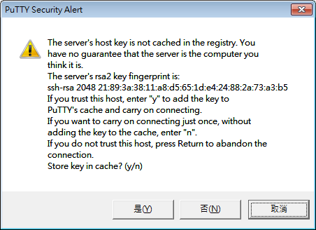之前在製作 private key 的時候有用 passphrase 進行保護的話，會在這時候請你輸入
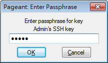飛天烏龜克隆中
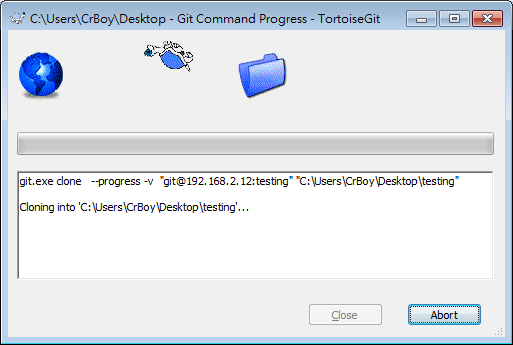 結束後，就可以在目標目錄中看到 clone 回來的東西，也就確定我們的安裝是正常的。
總結
對大部分人來說，使用 WinGit + TortoiseGit 就沒問題了，除非是需要進行 git 本身的開發才需要 checkout git source code。至於我個人實在很不能接受複雜的 TortoiseGit，使用 WinGit (Git Bash) 最符合我的習慣，偶爾可以透過 Git GUI 作為輔助吧。
Last modified on 2012-05-25